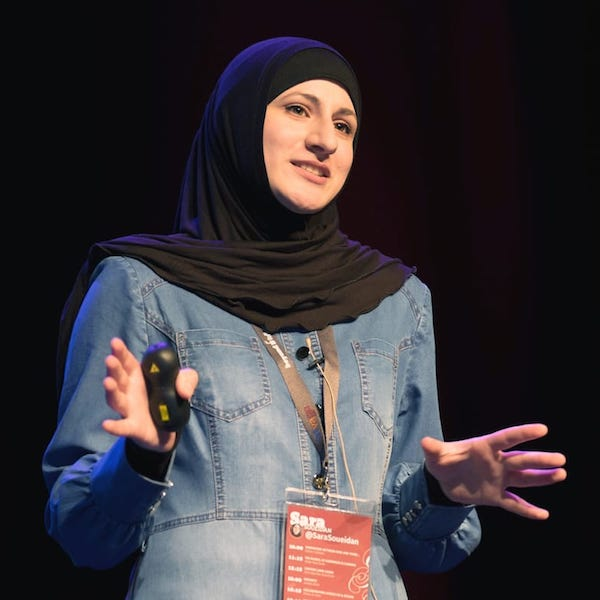
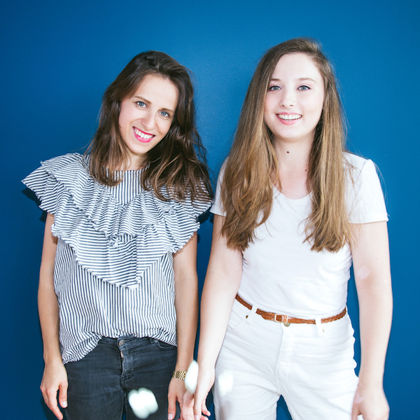
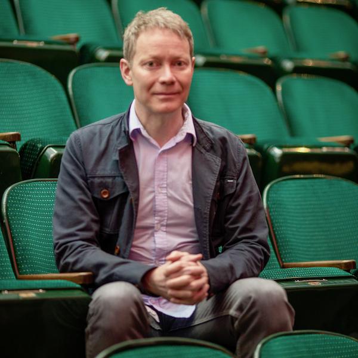
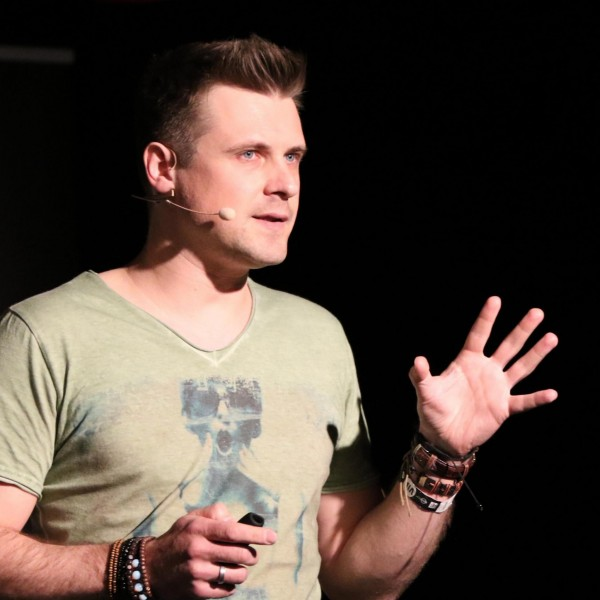
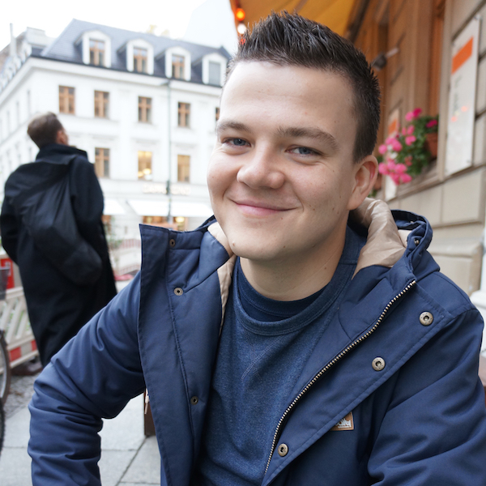
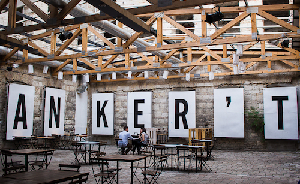

Save the date: on the 25th of October 2017, we're back.
About
CSSConf Budapest is a community conference dedicated to the designers and developers who love CSS. For the community, from the community. Part of the international CSSConf family.
Speakers

Sara Soueidan
Harry Roberts

Aga Napolcha & Marta Sztybor
Mauricio Palma
Charlie Owen

Anton McConville
Heidi Olsen

Denys Mishunov

Manuel Matuzović
Venue

Anker’t is a cavernous garden in downtown Budapest, housed by the massive building of a former factory. The internal spaces are characterized by a minimalist design, while the whole place is made up of spacious, connecting courtyards, bringing the famous Budapest Ruinpub aesthetics to the mix.